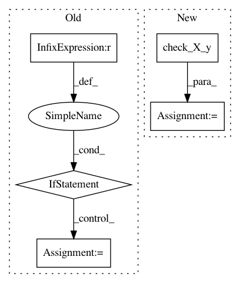

3e38fe09a87e6ef05289f3cbe6ffa03e2dc716e8,metric_learn/mlkr.py,MLKR,_process_inputs,#MLKR#Any#Any#,43
Before Change
def _process_inputs(self, X, y):
self.X = np.array(X, copy=False)
y = np.array(y, copy=False).ravel()
if X.ndim == 1:
X = X[:, np.newaxis]
n, d = X.shape
if y.shape[0] != n:
raise ValueError("Data and label lengths mismatch: %d != %d"
% (n, y.shape[0]))
After Change
self.max_iter = max_iter
def _process_inputs(self, X, y):
self.X_, y = check_X_y(X, y)
n, d = self.X_.shape
if y.shape[0] != n:
raise ValueError("Data and label lengths mismatch: %d != %d"
% (n, y.shape[0]))
In pattern: SUPERPATTERN
Frequency: 3
Non-data size: 5
Instances
Project Name: metric-learn/metric-learn
Commit Name: 3e38fe09a87e6ef05289f3cbe6ffa03e2dc716e8
Time: 2017-03-02
Author: perimosocordiae@gmail.com
File Name: metric_learn/mlkr.py
Class Name: MLKR
Method Name: _process_inputs
Project Name: rtavenar/tslearn
Commit Name: 798f945eadec05362ce8687cc83793fc8eab4d73
Time: 2019-08-20
Author: romain.tavenard@univ-rennes2.fr
File Name: tslearn/svm.py
Class Name: TimeSeriesSVC
Method Name: fit
Project Name: rtavenar/tslearn
Commit Name: 798f945eadec05362ce8687cc83793fc8eab4d73
Time: 2019-08-20
Author: romain.tavenard@univ-rennes2.fr
File Name: tslearn/svm.py
Class Name: TimeSeriesSVR
Method Name: fit